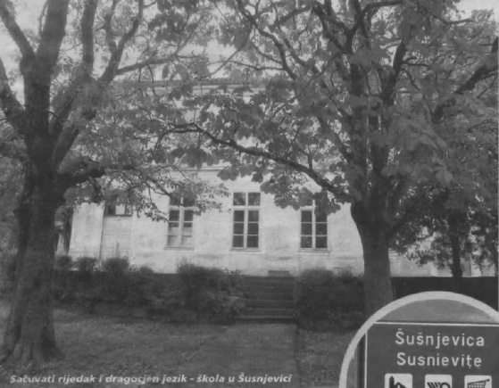

O očuvanju ovog kulturološkog identiteta i pomoći školi u Šušnjevici koja ga nastoji održati kroz nastavni program razgovarao je i s Predsjednikom Josipovićem i ministricom Pusić
Kršan - Titus Corlățean, ministar vanjskih poslova Republike Rumunjske, prekjučer je u sklopu svog posjeta Hrvatskoj posjetio općinu Kršan i tamošnje govornike istrorumunjskog jezika.
Istrorumunjski UNESCO-ova baština
 Njegovi domaćini bili su načelnik Valdi Runko, predsjednik i potpredsjednik Općinskog vijeća Zdravko Vidak, te zamjenica istarskog župana Viviana Benussi.
U obraćanju novinarima Corlățean je kazao da je s hrvatskim predsjednikom Ivom Josipovićem i mini stricom vanjskih poslova Vesnom Pusić razgovarao o jačanju odnosa Rumunjske i Hrvatske, posebice ekonomskih i vojnih unutar NATO-a, ali i o posebnom kulturnom mo stu koji spaja dvije zemlje.
Mi u Rumunjskoj imamo važnu hrvatsku nacionalnu manjinu u općini Karašova, smještenoj u jugozapadnom dijelu Banata. Ona ima i svog predstavnika u parlamentu, a država podupire očuvanje ovog važnog dijela naše kulturne baštine. Vi ovdje imate nešto posebno: malu zajednicu koja govori vrlo dragocjen jezik zvan vlaški, znanstvenog naziva istrorumunjski, koji predstavlja jedan od pet dijalekata rumunjskog jezika i nalazi se na UNESCO-voj listi nematerijalne kulturne baštine. S predsjednikom Josipovićem i ministricom Pusić razgovarao samo kako očuvati ovaj kulturološki identitet te kako školi u Šušnjevici pomoći da putem nastavnog programa djeci prenese i očuva ovaj iznimno rijedak i dragocjen jezik, kazao je rumunjski ministar vanjskih poslova.
S aktivnostima koje se u općini provode u cilju očuvanja običaja i jezika Istrorumunja upoznala ga je Viviana Brkarić, predsjednica udruge Spod Učke. Nakon toga je posjetio Osnovnu školu "Ivan Goran Kovačić" u Čepiću gdje su učenici izveli kulturno-umjetnički program, dijelom i na istrorumunjskom, a potom se susreo sa žiteljima Šušnjevice u tamošnjoj područnoj školi.
Nedaleko od Konstance
Corlățean je svoje domaćine da posjete Karašovu, ali i "drugu Istriju" koja se nalazi nedaleko od Konstance, najveće rumunjske pomorske luke. Radi se o selu na mjestu antičke Istrie koju su osnovali Grci, a potom je Rimljanima poslužila kao ishodište u osvajanju Dacije, koja je uz Traciju činila glavninu današnje Rumunjske.
R. Selan
February 7, 2014
© 2014 Glas Istre